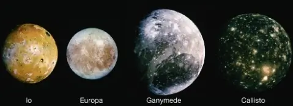
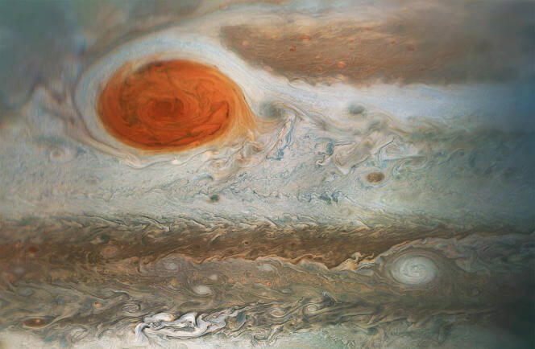

Structure
| Layer | Composition |
|---|---|
| Atmosphere | Molecular hydrogen and helium |
| Mantle | Liquid-metallic hydrogen and helium |
| Core | Dense solid rock |
Atmosphere
Jupiter is composed primarily of gaseous and liquids matter. There is no surface, only a gradual change from the atmosphere. Conditions blend smoothly from gas to liquid as the temperature and pressure inside Jupiter increase steadily toward the core.
Core
Jupiter is thought of have a dense core. The exact composition of the core is unknown, as are the properties of materials at the temperatures and pressures of those depths, but it is thought to be solid.
Moons

Jupiter governs the largest number of moons of any planet, with the current official total being 67. The four largest are the Galilean moons: Io, Europa, Ganymede, and Callisto. Ganymede, the largest moon in the Solar System, has a diameter greater than that of the planet Mercury.
Noticeable point

The Great Red Spot is a persistent anticyclonic storm on Jupiter that has been observed for at least 350 years. It is larger than the size of the Earth and is characterized by high wind speeds and distinctive reddish hue, which is thought to be due to the presence of chemicals in the planet's atmosphere.